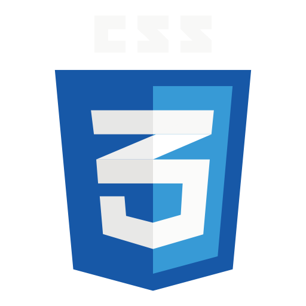

CZEGO NAUCZYŁY MNIE WARSZTATY?
Warsztaty nauczyły mnie tego co teraz sami widzicię.
Na warsztatach stworzyliśmy naszą stronę która opowiada właśnie o tych warsztatach.
Tworzenie tej strony zajęło nam około 8 godzin, tworząc taką stronę jest się bardzo
łatwo pomylić. Sam miałem problem, kiedy przez 30 minut próbowałem znaleźć problem który
popełniłem, a okazało się, że była to błachostka przez co nic nie chciało działać.

Każdy z nas miał do zrobienia własą podstronę która po złączeniu z pozostałymi miała
tworzyć jedość która przedstawia naszą pracę.Naszą stronę tworzyliśmy za pomocą
języka HTML i CSS, których uczył nas Marcin Burczyk.